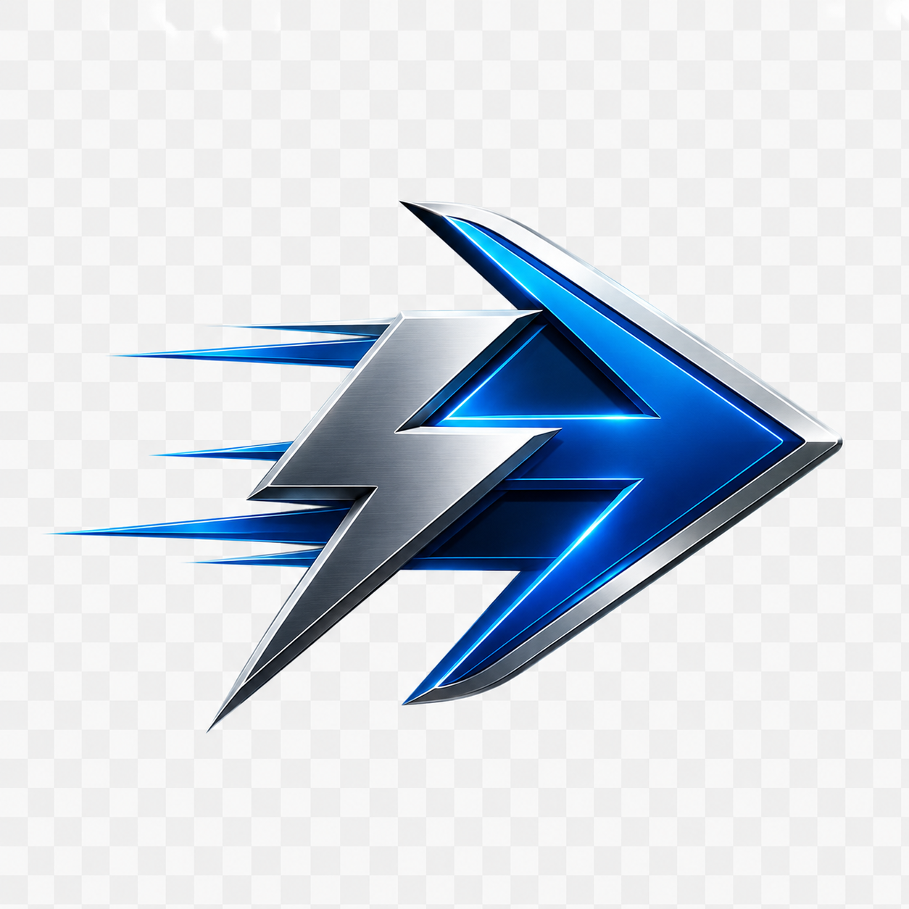

GT-ACT
G-code / setup sheetCycle-time analysis and setup-sheet automation for NC handoff.
- Parses G-code movement by N-block for review.
- Checks tool length against Z-depth before production.
- Exports standardized Excel and PDF setup sheets.